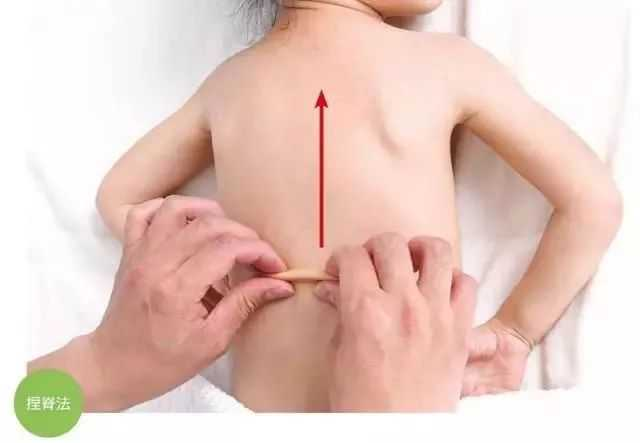

养生最大的敌人就是寒，而要排出体内的寒邪，最重要的就是补阳气，而要补阳气，就一定要多养背！！
养背就是养阳，养阳就是养命！
我们的在身体上，背为阳，腹为阴。只要保养好背部，就能让人体的背部发光发热，滋生出源源不断
脊柱两旁是足太阳膀胱经，各脏腑背俞穴均在背部膀胱经上，这些经穴是运行气血、联络脏腑的通路，刺激这些穴位可起到振奋阳气、调和气血，恢复脏腑功能的作用。由此可见，人体背部是很重要的部位，对内脏功能的调节起着重要作用，可调和阴阳，延年益寿。
四个常见养背方法
1、捶背、搓背、撞背
捶背：捶背又分自我捶打和他人捶打。本法可以舒经活血，振奋阳气，强心益肾，增强人体生命活力。
撞击时意念贯注背部，使意气集中于腰、肩、背之间，撞击100次左右。可提升阳气，调节内脏，能使全身气血通畅。
2、 按摩开背
精油开背是一种按摩方法，是一种精神上享受。活络精油配合独特开背手法，进行松筋开背按摩，可以促进血液循环，舒缓精神压力，消除疲劳，紧实肌肤，改善睡眠！特别适合肩颈僵硬、腰酸背痛、失眠压力大等亚健康人群。
3、背部捏脊
捏脊可以刺激背部督脉和足太阳膀胱经及五脏背腧穴，可以达到调整阴阳，调和气血，恢复脏腑功能的作用。

「捏脊」是儿童推拿手法中常用的治疗方法，可用两手沿着脊柱的两旁，用捏法把皮捏起来，边提捏，边向前推进，由尾骶部捏到枕项部，重复5~10遍。其实，不仅是小儿疾病，成人也可以用捏脊来治疗保健。
捏脊对于虚性体质常见的疲乏、消瘦、失眠、食欲不佳、消化不良、怕冷、易感冒、肩背腰疼痛都有很好的效果，各种文献报道中的适用范围则更为广泛，将它誉为调理虚性体质的“金钥匙”也不为过。
提示：有些人一次捏脊会很痛，有的人会疼的掉眼泪，如果坚持了下来，疼了三天之后开始有通畅的感觉，如果三次之后仍然很痛，建议先用火功推背法做7次，就不会再疼了，不会火功推拿的人，可以用艾灸代替。只要坚持捏脊半年，你的体质会好于以前3倍的你！
4、背部艾灸
背部艾灸多采用艾条悬灸和艾灸盒施灸的方式，具有使用方便，操作简单，不会烧灼皮肤产生疤痕的特点。


推动健康产业发展 助力全民健康生活
加入我们，打造 [ 千城万店 · 健康万民 ]
Promote the development of the health industry
上海运营总部：上海青浦区汇龙路695号C栋8楼(叶迪大厦)
华东运营中心：江苏省昆山市花桥镇绿地大道231弄2号楼
西南运营中心：成都市高新区环球中心E1-1212
欢迎关注百龄足官方微信或拨打400客服电话详询！
Welcome to Bailingzu official or call customer service phone for detailed inquiries
 商务合作
商务合作
 在线咨询
在线咨询